保存したデータを型単位で読み込み、保持、保存、削除します。
| 項目 | 内容 |
|---|---|
| namespace | SymphonyFrameWork.System.SaveSystem |
| 主な公開型 | SaveStore / SaveDataContent / SaveDataLoaderStrategy |
| メニューパス | Project Settings > SymphonyFrameWork > Save System、Window > SymphonyFrameWork > Symphony Administrator の Save Data パネル |
| 設定の保存先 | Assets/Resources/SymphonyFrameWork/SaveDataConfig.asset |
保存したいデータをSaveDataContentの派生classとして定義します。
using System;
using SymphonyFrameWork.System.SaveSystem;
[Serializable]
public sealed class PlayerData : SaveDataContent
{
public int Level = 1;
public int Gold;
}初回はLoadAsync<T>()で読み込み、戻り値のインスタンスを編集して保存します。
PlayerData data = await SaveStore.LoadAsync<PlayerData>();
data.Gold += 100;
await SaveStore.SaveAsync<PlayerData>();
await SaveStore.DeleteAsync<PlayerData>();読み込み済みであれば、同じインスタンスをGet<T>()で同期的に取り出せます。Get<T>()は暗黙の読み込みを行いません。 未読み込みの型を渡すとInvalidOperationExceptionになります。非同期I/Oを行うローダーで暗黙の同期読み込みを許すと、待機を同期ブロックして完了不能になるためです。
if (SaveStore.IsLoaded<PlayerData>())
{
PlayerData cached = SaveStore.Get<PlayerData>();
}既定ではJSONをPlayerPrefsへ保存します。別のシリアライザ、ファイル、クラウド等を使う場合はSaveDataLoaderStrategyを継承し、Project Settingsから選択します。
SaveDataContentを継承した、デフォルトコンストラクタを持つ具象classにする。SaveDataRegistryは3.0.0で削除済みである。 SaveStoreを使う。await SaveStore.LoadAsync<T>()を使い、戻り値でインスタンスを受け取る。 Get<T>()は読み込み済みの値だけを返し、未読み込みならInvalidOperationExceptionを投げる。暗黙の同期読み込みは3.0.0で廃止した。Get<T>()を使う前に読み込み済みか分からない場合はSaveStore.IsLoaded<T>()で確認する。SaveStoreが保持する型単位のキャッシュを編集する。別インスタンスとの二重管理を作らない。SaveDataOperationExceptionのOperation、DataType、LoaderType、InnerExceptionで診断する。キャンセルはOperationCanceledExceptionのまま伝播する。SaveDataLoaderStrategyはProject Settingsの選択肢へ自動登録される。設定ScriptableObjectを手動生成しない。LoadJsonAsync／SaveJsonAsync／DeleteCoreAsyncはAwaitableを返す。同期的に完了する場合はSymphonyAwaitable.Completed()とSymphonyAwaitable.FromResult(json)を使い、nullを返さない。SaveStore.GetEntries()で取得する。型名の昇順で並んだ取得時点のスナップショットとして扱う。Data != nullを「読み込み済み」の判定に使わない。 キャッシュは初回アクセス時に既定値で作られるため、両者は別の状態である。読み込み済みかどうかはSaveDataEntryInfo.IsLoadedで判定する。SaveStore が使用するセーブローダーを選択します。
入口: Project Settings > SymphonyFrameWork > Save System
| 項目 | 内容 |
|---|---|
| Loader | SaveDataLoaderStrategy を継承したローダー。[SerializeReference] で選択する |
| Current Loader Type | 現在設定されているローダーの型名（読み取り専用） |
保存先: Assets/Resources/SymphonyFrameWork/SaveDataConfig.asset
注意点:
SaveStore は既定の JsonUtility ローダーへフォールバックします。警告が表示されます。SaveDataConfig がまだ無い状態でこの画面を開いても、生成は始まりません。 未生成である旨と 設定アセットを生成 ボタンが表示されます。設定アセットの生成はEditor起動時にまとめて行われる処理であり、画面を開いた副作用として走らせないためです。ボタンを押すと、起動時と同じ経路（SymphonyEditorOrchestrator）で生成されます。SaveDataLoaderStrategy を継承してください。共通の検証とデータ復旧は基底クラスが担当します。SaveStore が読み直します。入口: Window > SymphonyFrameWork > Symphony Administrator
| パネル | 内容 |
|---|---|
| Save Data | 対応する全セーブデータ型、Inspectorの接続状態、保存状態 |
一覧から型を選ぶと、Inspectorのバインド元をランプで表示します。ランプは、Registry正本へ接続中なら緑、Window専用インスタンスへ保存値を読み込み済みなら黄、新規のWindow専用インスタンスなら赤、未選択なら消灯です。ロード中は赤のまま Loading… を表示し、完了までInspectorを編集できません。
| 操作 | 接続中（緑） | 非接続（黄・赤） |
|---|---|---|
| Load | Registry正本を保存先から読み直す | Window専用インスタンスへ読み込む |
| Save | Registry正本を保存する | Window専用インスタンスを保存し、Registryへは登録しない |
| Delete | 保存値を削除してRegistry正本を既定値へ戻す | 保存値を削除してWindow専用インスタンスを作り直す |
非接続のInspectorを編集すると 未保存の変更あり が表示されます。Play Mode へ持ち越す を有効にすると、Play Mode突入時にその内容を保存先へ書き出します。この設定は開発者ごとの UserSettings/SymphonyFrameWork/SymphonyUserSettingConfig.asset に保存され、既定は無効です。
Save DataのRuntime内部も同じ形で、処理順、読み取り変換、表示状態を分離しています。

SaveDataQueryだけがRegistry／Entityを読み取り、利用側にはSaveDataEntryInfo、Viewには内部Dtoを返します。SaveDataWindowは表示状態をSaveDataViewModelから購読し、操作と問い合わせはSaveDataViewStoreへ送ります。状態が変わったときにバインド元を評価し、解決した状態が変わった場合、または接続中のRegistry正本が差し替わった場合だけInspectorを再バインドします。
SaveDataViewStoreは表示状態を持たず、問い合わせをQueryへ、CommandをServiceへ委譲します。Window専用インスタンスのLoad／Save／DeleteはServiceのdetached操作へ渡され、通常操作と同じLoaderと例外変換を使いますが、Registryを読み書きせず、状態変更eventも発行しません。
永続化データが存在するかどうか（Exists）はQueryに含めません。ローダーへのI/Oであり、状態が変わるたびに全型分の問い合わせが走るためです。
この文書は Assets/SymphonyFrameWork/Documentation~/Modules/SaveDataSystem.md から生成しています。編集は正本のMarkdownへ行ってください。